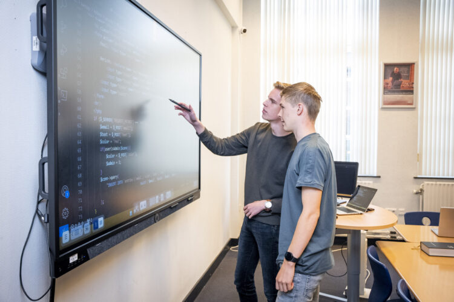
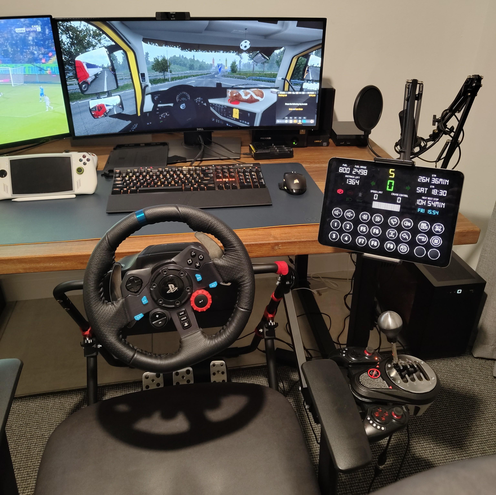

Over het Hoornbeeck
Hoornbeeck College Kampen
Het Hoornbeeck College in Kampen is een christelijk mbo waar geloof en leren hand in hand gaan. De school ligt aan de Willem Hendrik Zwartallee en biedt opleidingen in onder andere zorg, techniek en dienstverlening. Studenten leren er niet alleen een vak, maar ook om hun werk te doen vanuit een bijbelse overtuiging. Met een hechte sfeer, betrokken docenten en oog voor elke student is het Hoornbeeck College in Kampen een plek waar je kunt groeien — zowel in kennis als in geloof.
Ga hier naar de site van het Hoornbeeck College
Informatie
Wat leer je nu precies op de opleiding Software Developer? In het eerste jaar krijg je een goede basis aan IT-vaardigheden voor webdesign, programmeren en technisch beheer van IT-systemen. In het tweede jaar begin je met een half jaar stage, dus je werkt buiten school om. In het derde jaar krijg je alle kennis van de opleiding en wordt je klaargestoomd voor het examen. Zowel op school als op stage wordt het examen afgenomen.
Opleidingen
Software Developer
Leren programmeren en applicaties ontwikkelen voor web, desktop en mobiel.
Systeembeheer
Beheer en onderhoud van computersystemen, netwerken en servers.
Support Technician
Specialisatie in bij het helpen en ondersteunen van ICT problemen, op een servicedesk.

Over de auteur
Willem Jonkers
Voor een presentatie van een project heeft Willem Jonkers deze website gemaakt. Hij laat met behulp van afbeeldingen zien hoe hij dit gemaakt heeft. Dit doet hij samen met alle andere studenten. Als u op de knop hieronder drukt kunt u de studenten in actie zien.